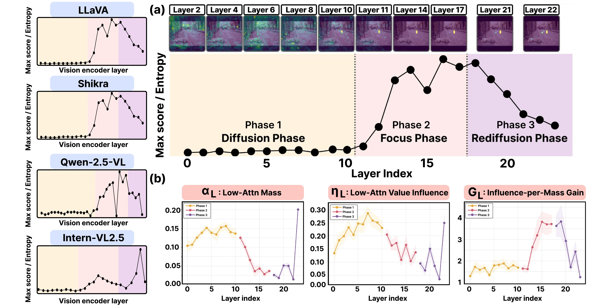
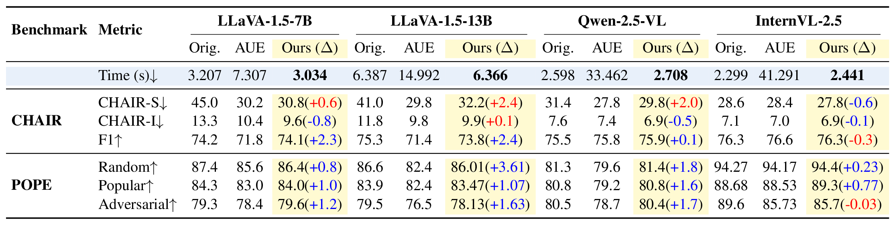
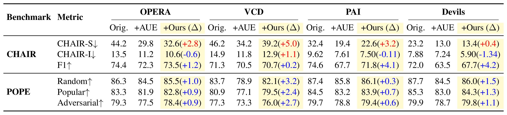
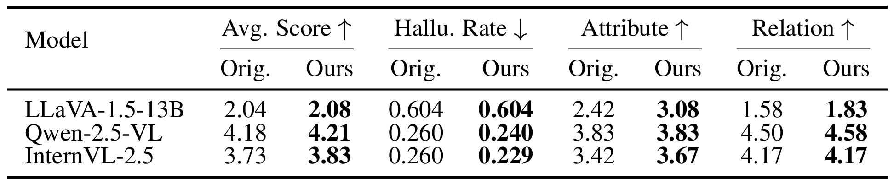
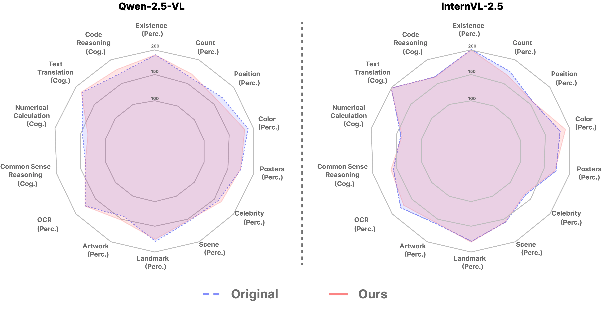

Large Vision-Language Models (LVLMs) have achieved impressive progress in multimodal reasoning,
yet they remain prone to object hallucinations, generating descriptions of objects that are not
present in the input image. In this work, we investigate hallucination from the perspective of
attention-value dynamics inside LVLM vision encoders. We identify a consistent three-phase
structure of visual processing—diffusion, focus, and
rediffusion—and show that the focus phase is where attention most clearly
separates strongly and weakly supported visual tokens. However, low attention does not necessarily
imply negligible downstream influence: low-attention tokens in the focus phase can still exert
non-negligible value-side influence on the attention output relative to their small attention mass.
Through controlled phase-wise value interventions, we find that hallucination behavior is
particularly sensitive to the value content of low-attention tokens during this phase. Replacing
or neutralizing these values reduces hallucination metrics while largely preserving grounded object
evidence. A token-level teacher-forcing analysis further shows that the intervention reduces the
probability of hallucinated object tokens with much smaller effects on ground-truth object tokens.
In addition, Visual Attention Ratio (VAR) analysis shows that focus-phase intervention is
accompanied by increased attention to visual tokens during decoding. Based on these observations,
we instantiate a simple training-free inference-time intervention that replaces focus-phase
low-attention values with an image-level mean value vector using statistics from a single forward
pass. Experiments across multiple LVLM backbones demonstrate that this analysis-derived
intervention reduces object hallucination with negligible additional runtime and remains
compatible with existing inference-time mitigation methods.
Empirical Analysis
Hover over each analysis to explore our findings
01 · Attention–Value Dynamics
Attention–Value Dynamics Across Vision-Encoder Layers

(a) Three-phase structure. We summarize layer-wise attention concentration as
\(R^{(\ell)} = \mathbb{E}_h[M^{(\ell,h)}] / \mathbb{E}_h[H^{(\ell,h)}]\),
the ratio of the maximum attention score to attention entropy.
Tracking \(R^{(\ell)}\) across layers reveals a consistent three-phase pattern across LVLM backbones:
Phase 1 · Diffusion: in early layers, attention is broadly distributed across visual tokens.
Phase 2 · Focus: in intermediate layers, attention becomes sharply concentrated on a small subset of tokens, most clearly separating strongly and weakly supported tokens.
Phase 3 · Rediffusion: in later layers, the concentrated pattern spreads out again.
(b) Low-attention value influence. However, low attention does not necessarily imply
negligible downstream influence. Let \(\mathcal{L}^{(\ell)}\) be the bottom-25% visual tokens by
received attention mass at layer \(\ell\). We track three quantities across layers:
\(\alpha_{\mathcal{L}}^{(\ell)}\): total attention mass assigned to low-attention tokens.
\(\eta_{\mathcal{L}}^{(\ell)}\): their normalized value contribution to the attention output.
\(G_{\mathcal{L}}^{(\ell)} = \eta_{\mathcal{L}}^{(\ell)} / (\alpha_{\mathcal{L}}^{(\ell)} + \epsilon)\): value influence per unit attention mass.
During the focus phase, \(\alpha_{\mathcal{L}}\) drops sharply as attention concentrates,
while \(\eta_{\mathcal{L}}\) remains non-negligible. The result is a large \(G_{\mathcal{L}}\):
low-attention tokens do not dominate the attention output, but their value content exerts a
disproportionate influence relative to their small attention mass. This
attention–value mismatch motivates the phase-wise value intervention analysis.
Experimental Results
Experimental Setup
Value Interventions
We evaluate four LVLM backbones (LLaVA-1.5-7B, LLaVA-1.5-13B, Qwen-2.5-VL, InternVL-2.5)
on CHAIR, POPE, MMHal-Bench and MME, using greedy decoding. Following the analysis in the previous section,
our intervention replaces the value vectors of the bottom-25% low-attention tokens during the
focus phase with an image-level mean value vector, computed from a single forward pass.
No training, gradient updates, or iterative optimization is required.
Result 1
Hallucination Mitigation & Inference Efficiency
We compare against the original models and
AUE,
which estimates unreliable visual tokens via iterative PGD-based optimization.
Consistent hallucination reduction: lowers \(\text{CHAIR}_S\) and \(\text{CHAIR}_I\) across all four backbones, comparable to AUE while generally preserving caption fidelity (F1) better.
Preserved visual recognition: generally preserves F1 and POPE performance more effectively than AUE across Random, Popular, and Adversarial splits, indicating that grounded visual evidence is retained.
Negligible runtime overhead: on Qwen-2.5-VL, AUE inflates inference from 2.60s to 33.46s (~12.9× slower); ours runs in 2.71s. On InternVL-2.5, AUE takes 41.29s vs. our 2.44s (~16.9× slower).

Result 2
Compatibility with Decoder-Side Methods
Our vision-encoder intervention can be combined with decoder-side mitigation methods
(OPERA, VCD, PAI, and Devils). We report each method alone, with AUE, and with ours.
Improved hallucination metrics: +Ours lowers \(\text{CHAIR}_S\) and \(\text{CHAIR}_I\) over each standalone method, although the additional reduction varies across combinations.
Higher fidelity than +AUE: +Ours consistently preserves higher F1 and POPE performance than +AUE across these settings.

Result 3
Broader Hallucination Evaluation on MMHal-Bench
To examine whether the effect extends beyond object-existence hallucination, we further evaluate on
MMHal-Bench, which covers attributes, relations, and reasoning, using LLaVA-1.5-13B, Qwen-2.5-VL-7B, and
InternVL-2.5-8B. For this broader evaluation, we use low-attention token ratios ranging from 20% to 25%,
while keeping the remaining intervention settings unchanged.
Improved average score: the average score improves across all three backbones, while all reported attribute- and relation-level scores are maintained or improved.
Lower or unchanged hallucination rate: the hallucination rate decreases on Qwen-2.5-VL and InternVL-2.5 while remaining unchanged on LLaVA-1.5-13B.
Beyond object-existence errors: these results indicate that the effect of our intervention extends to broader attribute- and relation-related hallucination settings.

Result 4
General Capability on MME
Beyond hallucination-specific benchmarks, we check on MME whether the intervention disturbs
broader multimodal capabilities. We compare per-category MME scores on Qwen-2.5-VL and
InternVL-2.5.
Profile largely preserved: the radar shapes follow the original models across both perception-oriented categories (existence, count, position, color, OCR, scene, etc.) and cognition-oriented categories (commonsense reasoning, numerical calculation, text translation, code reasoning).
No broad degradation of general capability: although small category-wise fluctuations are observed, the overall profiles remain similar, suggesting that the intervention mitigates hallucination without broadly degrading general multimodal capability.

BibTeX
@inproceedings{kim2026focus,
title={Focus Matters: Attention-Value Dynamics for Efficient Hallucination Mitigation in Vision-Language Models},
author={Kim, Sohyeon and Yoon, Sang Yeon and Kong, Kyeongbo},
booktitle={Advances in Neural Information Processing Systems},
year={2026}
}